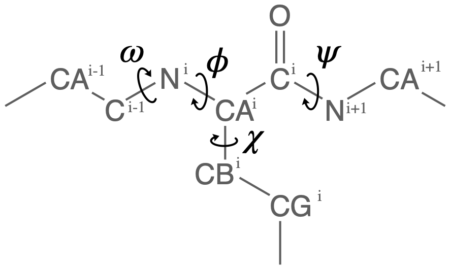

Protein dihedral angle analysis¶
We look at backbone dihedral angles and generate Ramachandran and Janin plots.
The methods and examples shown here are only applicable to Universes where protein residue names have standard names, i.e. the backbone is comprised of –N–CA–C–N–CA– atoms.
Last executed: Feb 06, 2020 with MDAnalysis 0.20.1
Last updated: February 2020
Minimum version of MDAnalysis: 0.19.0
Packages required:
Optional packages for visualisation:
[1]:
import MDAnalysis as mda
from MDAnalysis.tests.datafiles import GRO, XTC
from MDAnalysis.analysis import dihedrals
import matplotlib.pyplot as plt
import numpy as np
%matplotlib inline
Loading files¶
The test files we will be working with here feature adenylate kinase (AdK), a phosophotransferase enzyme. ([BDPW09])
[2]:
u = mda.Universe(GRO, XTC)
protein = u.select_atoms('protein')
print('There are {} residues in the protein'.format(len(protein.residues)))
There are 214 residues in the protein
Selecting dihedral atom groups¶
Proteins have canonical dihedral angles defined on the backbone atoms. \(\phi\) (phi), \(\psi\) (psi) and \(\omega\) (omega) are backbone angles. The side-chain dihedral angles are called \(\chi_n\) (chi-\(n\)), and can vary in number.

MDAnalysis allows you to directly select the atoms involved in the \(\phi\), \(\psi\), \(\omega\), and \(\chi_1\) angles, provided that your protein atoms have standard names. If MDAnalysis cannot find atoms matching the names that it expects, it will return None. You can see below that phi_selection() returns an ordered AtomGroup of the atoms in the \(\phi\) angle of a residue if they can be found, and None if not.
[3]:
for res in u.residues[210:220]:
phi = res.phi_selection()
if phi is None:
names = None
else:
names = phi.names
print('{}: {} '.format(res.resname, names))
LYS: ['C' 'N' 'CA' 'C']
ILE: ['C' 'N' 'CA' 'C']
LEU: ['C' 'N' 'CA' 'C']
GLY: ['C' 'N' 'CA' 'C']
SOL: None
SOL: None
SOL: None
SOL: None
SOL: None
SOL: None
Similar functions exist for the other angles:
\(\psi\) angle (
Residue.psi_selection)\(\omega\) angle (
Residue.omega_selection)\(\chi_1\) angle (
Residue.chi1_selection)
Calculating dihedral angles¶
Dihedral angles can be calculated directly from the AtomGroup, by converting it to a Dihedral object.
[4]:
omegas = [res.omega_selection() for res in protein.residues[5:10]]
omegas[0].dihedral.value()
[4]:
-169.78220560918737
The analysis.dihedrals.Dihedral class can be used to rapidly calculate dihedrals for AtomGroups over the entire trajectory.
[5]:
dihs = dihedrals.Dihedral(omegas).run();
The angles are saved in dihs.angles, in an array with the shape (n_frames, n_atomgroups).
[6]:
dihs.angles.shape
[6]:
(10, 5)
Plotting¶
[7]:
labels = ['Res {}'.format(n) for n in np.arange(5, 10)]
for ang, label in zip(dihs.angles.T, labels):
plt.plot(ang, label=label)
plt.xlabel('Frame')
plt.ylabel('Angle (degrees)')
plt.legend()
[7]:
<matplotlib.legend.Legend at 0x11392bb38>
[8]:
fig_polar = plt.figure()
ax_polar = fig_polar.add_subplot(111, projection='polar')
frames = np.arange(10)
for res, label in zip(dihs.angles.T, labels):
c = ax_polar.plot(res, frames, label=label)
plt.legend();
Ramachandran analysis¶
The Ramachandran class calculates the \(\phi\) and \(\psi\) angles of the selected residues over the course of the trajectory, again saving it into .angles. If residues are given that do not contain a \(\phi\) and \(\psi\) angle, they are omitted from the results. For example, the angles returned are from every residue in the protein except the first and last, for which a \(\phi\) angle and a \(\psi\) angle do not exist, respectively.
The returned angles are in the shape (n_frames, n_residues, 2) where the last dimension holds the \(\phi\) and \(\psi\) angle.
[9]:
rama = dihedrals.Ramachandran(protein).run()
print(rama.angles.shape)
(10, 212, 2)
You can plot this yourself, but Ramachandran.plot() is a convenience method that plots the data from each time step onto a standard Ramachandran plot. You can call it with no arguments; any keyword arguments that you give (except ax and ref) will be passed to matplotlib.axes.Axes.scatter to modify your plot.
[10]:
rama.plot(color='black', marker='.')
[10]:
<matplotlib.axes._subplots.AxesSubplot at 0x1138f90b8>
If you set ref=True, your data will be plotted with areas that show the allowed (dark blue) and marginally allowed (lighter blue) regions.
Note
These regions are computed from a reference set of 500 PDB files from ([LDA+03]). The allowed region includes 90% data points, while the marginally allowed region includes 99% data points.
[11]:
rama.plot(color='black', marker='.', ref=True)
[11]:
<matplotlib.axes._subplots.AxesSubplot at 0x1138c2588>
Janin analysis¶
The Janin class works similarly to the Ramachandran analysis, but looks at the \(\chi_1\) and \(\chi_2\) angles instead. It therefore ignores all residues without a long enough side-chain, such as alanine, cysteine, and so on.
Again, the returned angles are in the shape (n_frames, n_residues, 2) where the last dimension holds the \(\chi_1\) and \(\chi_2\) angle. We can see that only about half of the residues in AdK have side-chains long enough for this analysis.
[12]:
janin = dihedrals.Janin(protein).run()
print(janin.angles.shape)
(10, 129, 2)
The Janin class also contains a plot() method.
Note
The reference regions here are also computed from the reference set of 500 PDB files from ([LDA+03]) (the allowed region includes 90% data points, while the marginally allowed region includes 98% data points). Information about general Janin regions is from ([JWLM78]).
[13]:
janin.plot(ref=True, marker='.', color='black')
[13]:
<matplotlib.axes._subplots.AxesSubplot at 0x11389d518>
References¶
[1] Oliver Beckstein, Elizabeth J. Denning, Juan R. Perilla, and Thomas B. Woolf. Zipping and Unzipping of Adenylate Kinase: Atomistic Insights into the Ensemble of Open↔Closed Transitions. Journal of Molecular Biology, 394(1):160–176, November 2009. 00107. URL: https://linkinghub.elsevier.com/retrieve/pii/S0022283609011164, doi:10.1016/j.jmb.2009.09.009.
[2] Richard J. Gowers, Max Linke, Jonathan Barnoud, Tyler J. E. Reddy, Manuel N. Melo, Sean L. Seyler, Jan Domański, David L. Dotson, Sébastien Buchoux, Ian M. Kenney, and Oliver Beckstein. MDAnalysis: A Python Package for the Rapid Analysis of Molecular Dynamics Simulations. Proceedings of the 15th Python in Science Conference, pages 98–105, 2016. 00152. URL: https://conference.scipy.org/proceedings/scipy2016/oliver_beckstein.html, doi:10.25080/Majora-629e541a-00e.
[3] Joël Janin, Shoshanna Wodak, Michael Levitt, and Bernard Maigret. Conformation of amino acid side-chains in proteins. Journal of Molecular Biology, 125(3):357 – 386, 1978. 00874. URL: http://www.sciencedirect.com/science/article/pii/0022283678904084, doi:10.1016/0022-2836(78)90408-4.
[4] Simon C. Lovell, Ian W. Davis, W. Bryan Arendall, Paul I. W. de Bakker, J. Michael Word, Michael G. Prisant, Jane S. Richardson, and David C. Richardson. Structure validation by Cα geometry: ϕ,ψ and Cβ deviation. Proteins: Structure, Function, and Bioinformatics, 50(3):437–450, January 2003. 03997. URL: http://doi.wiley.com/10.1002/prot.10286, doi:10.1002/prot.10286.
[5] Naveen Michaud-Agrawal, Elizabeth J. Denning, Thomas B. Woolf, and Oliver Beckstein. MDAnalysis: A toolkit for the analysis of molecular dynamics simulations. Journal of Computational Chemistry, 32(10):2319–2327, July 2011. 00778. URL: http://doi.wiley.com/10.1002/jcc.21787, doi:10.1002/jcc.21787.